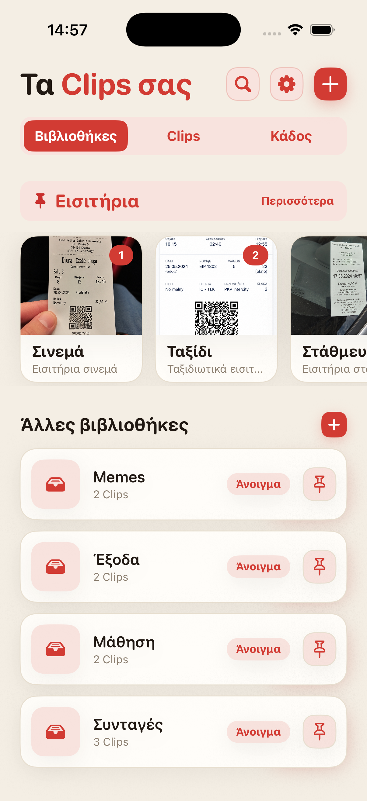
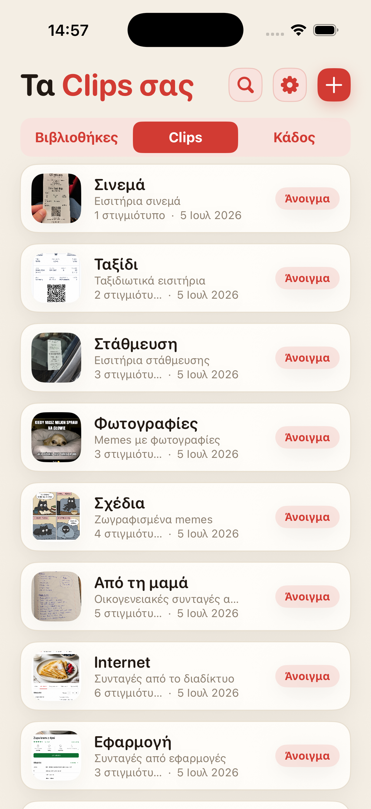
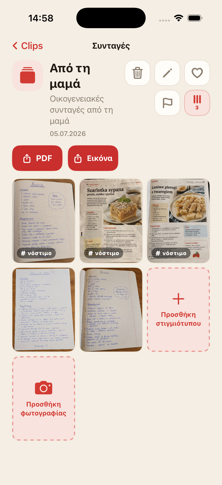
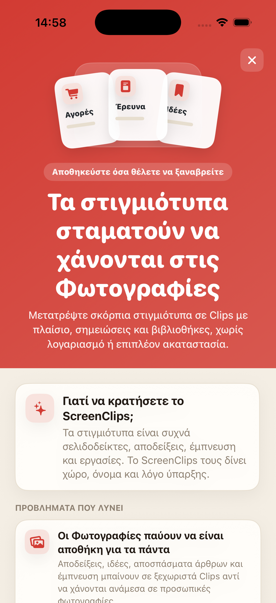

Το screenshot χάνεται στη ροή
Αποθηκεύεις κάτι σημαντικό και μια εβδομάδα μετά ξεφυλλίζεις τις Φωτογραφίες σαν παλιό φάκελο.
Μετέτρεψε τα σκόρπια στιγμιότυπα οθόνης σε Clips με όνομα, σημείωση και δική τους βιβλιοθήκη. Χωρίς λογαριασμό, χωρίς cloud και χωρίς καθημερινό ψάξιμο στο άλμπουμ.

Αποδείξεις, συνταγές, εισιτήρια, ιδέες και αποσπάσματα άρθρων καταλήγουν ανάμεσα σε selfies, memes και τυχαίες λήψεις. Το cloud υπάρχει, αλλά η διεύθυνση του ξενοδοχείου από την περασμένη εβδομάδα μπορεί ακόμα να είναι άφαντη.
Αποθηκεύεις κάτι σημαντικό και μια εβδομάδα μετά ξεφυλλίζεις τις Φωτογραφίες σαν παλιό φάκελο.
Μόνο η εικόνα συχνά δεν αρκεί. Το ScreenClips σου δίνει χώρο για όνομα και σημείωση.
Αγορές, δουλειά, ταξίδια και μελέτη αξίζουν δικές τους θέσεις, όχι έναν μεγάλο σωρό στις Φωτογραφίες.
Μάζεψε συνταγές, αποδείξεις, εισιτήρια, έρευνα, σημειώσεις μελέτης ή ό,τι θέλεις να βρίσκεις αργότερα.
Ένα Clip συγκεντρώνει όλα γύρω από ένα συγκεκριμένο θέμα. Έχει όνομα, περιγραφή και τα δικά του screenshots.
Άνοιξε τη βιβλιοθήκη, διάλεξε το Clip και συνέχισε από εκεί που σταμάτησες. Χωρίς ατελείωτη βόλτα στο άλμπουμ.

Το ScreenClips δεν προσπαθεί να μαντέψει τα πάντα για εσένα. Σου δίνει μια απλή δομή: βιβλιοθήκη για το θέμα, Clip για το αντικείμενο, screenshots και εικόνες μέσα.
Μάζεψε περιεχόμενο σε Clips και συμπλήρωνέ το όσο μεγαλώνει το θέμα.
Όταν ένα Clip πρέπει να σταλεί ή να μείνει έξω από την εφαρμογή, γίνεται ένα καθαρό αρχείο.
Εκεί που πριν υπήρχε μόνο κύλιση και αναστεναγμός, έχεις αγαπημένα, σημαίες και τάξη.

Το ScreenClips λειτουργεί τοπικά. Δεν χρειάζεται να φτιάξεις λογαριασμό ούτε να δώσεις αποδείξεις, σημειώσεις και σχέδια σε άλλη μία υπηρεσία μόνο και μόνο για να έχεις τάξη.
Το Premium δεν κάνει την εφαρμογή πιο περίπλοκη. Απλώς δίνει περισσότερο χώρο για βιβλιοθήκες, Clips και screenshots. Η τιμή εμφανίζεται στο App Store.
Λήψη στοApp Store
Όχι. Όταν αφαιρείς μια εικόνα από ένα Clip, το αρχικό αρχείο παραμένει στις Φωτογραφίες.
Ναι. Το ScreenClips είναι φτιαγμένο ως τοπικός οργανωτής στο iPhone.
Όχι. Το ScreenClips δεν απαιτεί λογαριασμό για να οργανώνεις Clips.
Ναι. Όταν ανήκουν στο ίδιο Clip, μπορείς να προσθέσεις και screenshots και φωτογραφίες.
Το ScreenClips βάζει τάξη σε όσα αποθήκευσες για "αργότερα". Αυτή τη φορά, το "αργότερα" βρίσκεται στ' αλήθεια.
Λήψη στοApp Store